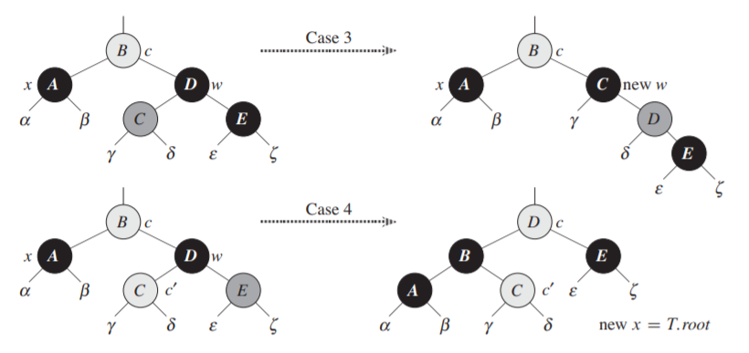

general
Paragraph🎶
一说起禅智内供的鼻子，池尾地方是没一个不知道的。长有五六寸，从上唇的上面直拖到下颏的下面去。形状是从顶到底，一样的粗细。简捷说，便是一条细长的香肠似的东西，在脸中央拖着罢了。 五十多岁的内供是从还做沙弥的往昔以来，一直到生了内道场供奉的现在为止，心底里始终苦着这鼻子。这也不单因为自己是应该一心渴仰着将来的净土的和尚，于鼻子的烦恼，不很相宜；其实倒在不愿意有人知道他介意于鼻子的事。内供在平时的谈话里，也最怕说出鼻子这一句话来。 内供之所以烦腻那鼻子的理由，大概有二，——其一，因为鼻子之长，在实际上很不便。第一是吃饭时候，独自不能吃。倘若独自吃时，鼻子便达到碗里的饭上面去了。于是内供叫一个弟子坐在正对面，当吃饭时，使他用一条广一寸长二尺的木板，掀起鼻子来。但是这样的吃饭法，在能掀的弟子和所掀的内供，都不是容易的事。有一回，替代这弟子中童子打了一个喷嚏，因而手一抖，那鼻子便落到粥里去了的故事，那时是连京都都传遍的。——然而这事，却还不是内供之所以以鼻子为苦的重大的理由，内供之所以为苦者，其实却在乎因这鼻子而伤了自尊心这一点。 池尾的百姓们，替有着这样鼻子的内供设想，说内供幸而是出家人；因为都以为这样的鼻子，是没有女人肯嫁的。其中甚而至于还有这样的批评，说是正因为这样鼻子，所以才来做和尚。然而内供自己，却并不觉得做了和尚，便减了几分鼻子的烦恼去。内供的自尊心，较之为娶妻这类结果的事实所左右的东西，微妙得多多了。因此内供在积极的和消极的两方面，要将这自尊心的毁损恢复过来。
List🎶
上面的例子假设数据集的基数为 1。当数据集很大时:
- 批量梯度下降 (BGD): 理想的梯度下降方式，对数据集中每个输入计算误差，将所有误差累加取平均作为最终的代价函数，并以此更新参数
全数据集计算代价函数，更好地代表总体，算出极小值后，保证梯度为 00
- 对每个参数求偏导需要遍历数据集，计算过程很慢
- 容易陷入局部极小值点
- 随机梯度下降 (stochastic, SGD): 每计算一个样本的前向传播后，就计算它的代价，并以之为目标函数更新参数
- 速度快，随机性有利于跳出局部极小值点
- 准确度下降，解空间搜索比较盲目，但大体上是最优方向
- 若收敛，loss 呈现上下震荡、但总体上下降的趋势
-
小批量梯度下降 (Mini-BGD): SGD 和 BGD 的折中，把数据集随机分成若干 mini batch，每次迭代使用 batch size 个样本进行更新
- 合理地增大 batch 可充分利用 GPU，提高内存利用率，减小 loss 的震荡，小 batch 引入随机性，尽管计算速度快，但同样可能造成收敛速度慢甚至不收敛
- 合理地增大 batch 可充分利用 GPU，提高内存利用率，减小 loss 的震荡，小 batch 引入随机性，尽管计算速度快，但同样可能造成收敛速度慢甚至不收敛
-
速度快，随机性有利于跳出局部极小值点
- 准确度下降，解空间搜索比较盲目，但大体上是最优方向
- 若收敛，loss 呈现上下震荡、但总体上下降的趋势
Math Formula🎶
$$ L(\bm{w}) $$
E: $1 $ plus $1$ $=$ $2$
$\displaystyle L() $
$\displaystyle L(\bm{w},b,\bm{\xi},\bm{\alpha},\bm{\mu})=\frac{1}{2}||\bm{w}||^2+C\sum_{i=1}^n \xi_i-\sum_{i=1}^n \alpha_i(y_i(\bm{w^\mathrm{T}}\bm{x_i}+b)-1+\xi_i)-\sum_{i=1}^n\mu_i\xi_i \\ \Leftrightarrow $
$\displaystyle \left(\begin{array}{c} p_{1} \\ p_{2} \\ \vdots \\ p_{R} \end{array}\right)\left(\begin{array}{cccc} a_{1} & a_{2} & \cdots & a_{M} \end{array}\right)=\left(\begin{array}{cccc} p_{1} a_{1} & p_{1} a_{2} & \cdots & p_{1} a_{M} \\ p_{2} a_{1} & p_{2} a_{2} & \cdots & p_{2} a_{M} \\ \vdots & \vdots & \ddots & \vdots \\ p_{R} a_{1} & p_{R} a_{2} & \cdots & p_{R} a_{M} \end{array}\right) $
Permalink🎶
⭐🤯🥳🧐😈🤖👾❤️🔥💯💤🌺🌸💮🌼🍑🍄🌐🧭🌍⏳🌟🪐🌠🌌🎆🎇🏅🎼🎵🎶🛡⚠⏩🔆🏁🚩🔖✉📒📖📔📙📕📑🗂📈📌📎🔒🔑🗝🗡⚔🔫🔭📡🧬🩺💠🔘
Fonts🎶
- en:
- cycn-eng: If winter comes , can spring be far behind ?
- monaco: If winter comes , can spring be far behind ?
- consolas: If winter comes , can spring be far behind ?
- m:
If winter comes , can spring be far behind ? - msf: If winter comes , can spring be far behind ?
Tables: Simple Style & Addition🎶
| C Type | Min Value | Max Value |
|---|---|---|
[signed] char |
-127 | 127 |
unsigned char |
0 | 255 |
short |
-32767 | 32767 |
unsigned short |
0 | 65535 |
int |
-32767 | 32767 |
unsigned |
0 | 65535 |
long |
-2147483647 | 2147483647 |
unsigned long |
0 | 4294967295 |
int32_t |
-2147483647 | 2147483647 |
uint32_t |
0 | 4294967295 |
int64_t |
-9223372036854775808 | 9223372036854775807 |
uint64_t |
0 | 18446744073709551615 |
| C Type | Min Value | Max Value |
|---|---|---|
[signed] char |
-127 | 127 |
unsigned char |
0 | 255 |
short |
-32767 | 32767 |
unsigned short |
0 | 65535 |
int |
-32767 | 32767 |
unsigned |
0 | 65535 |
long |
-2147483647 | 2147483647 |
unsigned long |
0 | 4294967295 |
int32_t |
-2147483647 | 2147483647 |
uint32_t |
0 | 4294967295 |
int64_t |
-9223372036854775808 | 9223372036854775807 |
uint64_t |
0 | 18446744073709551615 |
Admonitions🎶
一个关系中可能由多组候选码，因此，用主码 (primary key) 代表被数据库设计者选中的、用以在一个关系中区分不同元组的候选码。主码的选择应当慎重，应选择那些值不会或极少变化的那些属性，例如一个人的地址就不应被选为主码。习惯上，把一个关系的主码属性排列在其他属性前。
hint
- 点对点链路 (point-to-point link) 由链路及其两端单一的发送方和接收方组成。很多链路层协议如 PPP、HDLC 基于此而设计。
- 广播链路 (broadcast link) 能够让多个发送和接收节点接入到同一个共享链路上。广播的含义是当任何一个节点传输一个帧时，信道广播该帧，每个其他节点都收到一个副本，以太网和无线局域网均基于此实现。
hint
- 点对点链路 (point-to-point link) 由链路及其两端单一的发送方和接收方组成。很多链路层协议如 PPP、HDLC 基于此而设计。
- 广播链路 (broadcast link) 能够让多个发送和接收节点接入到同一个共享链路上。广播的含义是当任何一个节点传输一个帧时，信道广播该帧，每个其他节点都收到一个副本，以太网和无线局域网均基于此实现。
caution
- 点对点链路 (point-to-point link) 由链路及其两端单一的发送方和接收方组成。很多链路层协议如 PPP、HDLC 基于此而设计。
- 广播链路 (broadcast link) 能够让多个发送和接收节点接入到同一个共享链路上。广播的含义是当任何一个节点传输一个帧时，信道广播该帧，每个其他节点都收到一个副本，以太网和无线局域网均基于此实现。
caution 的
de
- 点对点链路 (point-to-point link) 由链路及其两端单一的发送方和接收方组成。很多链路层协议如 PPP、HDLC 基于此而设计。
- 广播链路 (broadcast link) 能够让多个发送和接收节点接入到同一个共享链路上。广播的含义是当任何一个节点传输一个帧时，信道广播该帧，每个其他节点都收到一个副本，以太网和无线局域网均基于此实现。
caution
| NetID | HostID | 作为源 IP | 作为目的 IP | 用途 |
|---|---|---|---|---|
| 全0 | 全0 | 可以 | 不可以 | 在本局域网范围内表示本机；在路由表中用于表示默认路由 |
| 全0 | 特定值 | 不可以 | 可以 | 用于表示本局域网内某个特定主机 |
| 全1 | 全1 | 不可以 | 可以 | 本局域网内广播地址 |
| 特定值 | 全0 | 不可以 | 不可以 | 网络的地址，表示一个网络 |
| 特定值 | 全1 | 不可以 | 可以 | 直接广播地址，对特定网络（另外一个网络）上所有主机进行广播 |
| 127 | 非全0或非全1的任何数 | 可以 | 可以 | 环回地址，用于本地软件环回测试 |
Img🎶
一段话一段话一段话一段话一段话一段话一段话一段话一段话一段话一段话一段话一段话一段话一段话一段话一段话一段话一段话一段话一段话一段话一段话一段话一段话一段话一段话一段话一段话一段话一段话一段话一段话一段话一段话一段话一段话一段话一段话一段话一段话一段话一段话一段话 abcdefg 一段话一段话一段话一段话一段话一段话一段话一段话
---------------------------- BORDER ------------------------------------
usage:
<font class="i_[l|r|n]_[a...]_[b...]" id="caption"></font>